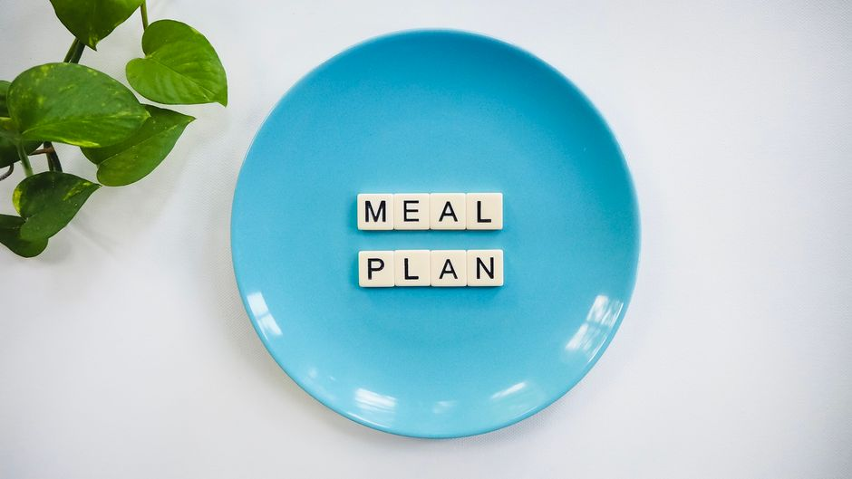

Tips for Cooking in Mass and Reducing Food Costs

Photo: Vegan Liftz / Pexels
Cooking a large batch once or twice a week lowers the cost of meals and the time you spend at the stove. Here is how to do it efficiently and, above all, safely.
1. Choose dishes that keep well
Soups, chilis, stews, lentil dishes, tomato sauces, rice, baked pasta and curries suit advance preparation. Legumes such as lentils, chickpeas and beans are among the cheapest ingredients.
2. Plan and make a list
Pick two or three recipes, write down the ingredients, then check what you already have. Compare the price per kilogram or per unit rather than the package price.
3. Cook in one session
Prepare the vegetables all at once and start a simmering dish while you prepare another. A large pot, an oven and a slow cooker save time.
4. Cool food quickly
Do not let a big pot of hot food cool for hours on the stove. Divide it into shallow containers and refrigerate within two hours.
5. Store and freeze correctly
- In the refrigerator, cooked dishes generally keep for two to three days.
- In the freezer, divide into single portions and label with the dish name and date.
- Thaw in the refrigerator and reheat until very hot throughout.
6. Cook meat thoroughly
Poultry must reach 74 °C (165 °F) in the thickest part. A kitchen thermometer is a small purchase that pays off. Wash your hands and clean surfaces after handling raw meat.
7. Vary the meals to avoid boredom
Serve the same rice or pasta base with different sauces, or add a fresh topping to each meal.
Cooking in bulk means buying larger quantities, wasting less and eating better throughout the week.
Recommended products
As an Amazon Associate, I earn from qualifying purchases.